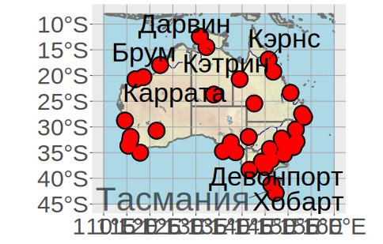

Linking to GEOS 3.12.2, GDAL 3.9.3, PROJ 9.4.1; sf_use_s2() is TRUEterra 1.8.29
Attaching package: 'tidyterra'The following object is masked from 'package:stats':
filterlibrary(ggplot2)
library(ggrepel)
root <- "D:/users/platt/shapefile/auxiliary/naturalearth/5.1.2"
shpname <- file.path(root,"10m_physical","ne_10m_ocean.shp.zip")
ocean.sf <- sf::st_read(shpname)Reading layer `ne_10m_ocean' from data source
`C:\Users\platt\shapefile\auxiliary\naturalearth\5.1.2\10m_physical\ne_10m_ocean.shp.zip'
using driver `ESRI Shapefile'
Simple feature collection with 1 feature and 3 fields
Geometry type: MULTIPOLYGON
Dimension: XY
Bounding box: xmin: -180 ymin: -85.22194 xmax: 180 ymax: 90
Geodetic CRS: WGS 84Spherical geometry (s2) switched offaustralia <- sf::st_crop(ocean.sf, xmin=110, xmax=160, ymin=-45, ymax=-8) # обрезанный полигон океанаalthough coordinates are longitude/latitude, st_intersection assumes that they are planarWarning: attribute variables are assumed to be spatially constant throughout all geometriesgrat5 <- file.path(root,"10m_physical","ne_10m_graticules_5.shp.zip")
grat5.sf <- sf::st_read(grat5)Reading layer `ne_10m_graticules_5' from data source
`C:\Users\platt\shapefile\auxiliary\naturalearth\5.1.2\10m_physical\ne_10m_graticules_5.shp.zip'
using driver `ESRI Shapefile'
Simple feature collection with 107 features and 6 fields
Geometry type: LINESTRING
Dimension: XY
Bounding box: xmin: -180 ymin: -89.99993 xmax: 180 ymax: 90
Geodetic CRS: WGS 84although coordinates are longitude/latitude, st_intersection assumes that they are planarWarning: attribute variables are assumed to be spatially constant throughout all geometriesrivers <- file.path(root,"10m_physical","ne_10m_rivers_lake_centerlines.shp.zip")
rivers.sf <- sf::st_read(rivers)Reading layer `ne_10m_rivers_lake_centerlines' from data source
`C:\Users\platt\shapefile\auxiliary\naturalearth\5.1.2\10m_physical\ne_10m_rivers_lake_centerlines.shp.zip'
using driver `ESRI Shapefile'
Simple feature collection with 1473 features and 38 fields
Geometry type: MULTILINESTRING
Dimension: XY
Bounding box: xmin: -164.9035 ymin: -52.15775 xmax: 177.5204 ymax: 75.79348
Geodetic CRS: WGS 84although coordinates are longitude/latitude, st_intersection assumes that they are planarWarning: attribute variables are assumed to be spatially constant throughout all geometriesReading layer `ne_10m_lakes' from data source
`C:\Users\platt\shapefile\auxiliary\naturalearth\5.1.2\10m_physical\ne_10m_lakes.shp.zip'
using driver `ESRI Shapefile'
Simple feature collection with 1355 features and 41 fields
Geometry type: MULTIPOLYGON
Dimension: XY
Bounding box: xmin: -165.9656 ymin: -50.66967 xmax: 177.1544 ymax: 81.95521
Geodetic CRS: WGS 84although coordinates are longitude/latitude, st_intersection assumes that they are planarWarning: attribute variables are assumed to be spatially constant throughout all geometriesstates <- file.path(root,"10m_cultural","ne_10m_admin_1_states_provinces.shp.zip")
states.sf <- sf::st_read(states)Reading layer `ne_10m_admin_1_states_provinces' from data source
`C:\Users\platt\shapefile\auxiliary\naturalearth\5.1.2\10m_cultural\ne_10m_admin_1_states_provinces.shp.zip'
using driver `ESRI Shapefile'
Simple feature collection with 4596 features and 121 fields
Geometry type: MULTIPOLYGON
Dimension: XY
Bounding box: xmin: -180 ymin: -90 xmax: 180 ymax: 83.6341
Geodetic CRS: WGS 84although coordinates are longitude/latitude, st_intersection assumes that they are planarWarning: attribute variables are assumed to be spatially constant throughout all geometriesstates_scalerank3<-states_cropped[states_cropped$scalerank<"3",]
states_austr<-states_scalerank3[states_scalerank3$admin=="Australia",]
states_austr_state<-states_austr[states_austr$type=="State",]
states_austr_terr<-states_austr[states_austr$type=="Territory",]
state_northern<-states_austr_terr[states_austr_terr$name_ru=="Северная территория",]
cities <- file.path(root,"10m_cultural","ne_10m_populated_places.shp.zip")
cities.sf <- sf::st_read(cities)Reading layer `ne_10m_populated_places' from data source
`C:\Users\platt\shapefile\auxiliary\naturalearth\5.1.2\10m_cultural\ne_10m_populated_places.shp.zip'
using driver `ESRI Shapefile'
Simple feature collection with 7342 features and 137 fields
Geometry type: POINT
Dimension: XY
Bounding box: xmin: -179.59 ymin: -90 xmax: 179.3833 ymax: 82.48332
Geodetic CRS: WGS 84cities_austr<-cities.sf[cities.sf$ADM0NAME=="Australia",]
cities_scalerank6<-cities_austr[cities_austr$SCALERANK<6,]
tifname<- file.path(root,"../../naturalearth.raster","NE1_LR_LC.tif")
file.exists(tifname)[1] TRUEphysical <- raster::stack(tifname) |> as("SpatRaster")
phys_cropped<-crop(physical, ext(110, 160, -45, -8)) ## сперва обе координаты по x, потом по y
(state_size <- seq(7))[1] 1 2 3 4 5 6 7state_size[state_size>0]<-15
state_alpha<-state_size
state_alpha[state_alpha>0]<-0.6
(city_size <- seq(36)) [1] 1 2 3 4 5 6 7 8 9 10 11 12 13 14 15 16 17 18 19 20 21 22 23 24 25 26 27 28 29 30 31 32 33 34
[35] 35 36city_size[city_size>0]<-12
city_alpha<-city_size
city_alpha[city_alpha>0]<-1
#######################
Australia1<-ggplot()+
scale_x_continuous(breaks=seq(110,160, by=5)) +
ggplot2::theme(
legend.position="none",
axis.text.x = element_text(size = 30),
axis.text.y = element_text(size = 30),
panel.grid = ggplot2::element_line(color = "darkgrey", linewidth=0.5, linetype = 1)) +
tidyterra::geom_spatraster_rgb(
mapping=aes(),
phys_cropped,
interpolate = FALSE) +
geom_sf(data=australia, fill="lightblue") +
geom_sf(data=rivers_cropped, color="darkblue", size=0.2) +
geom_sf(data=lakes_cropped, fill="lightblue", size=0.2) +
geom_sf(data=states_cropped, fill=ggplot2::alpha("white", 0.05), color="#717171", linewidth=1) +
ggplot2::geom_sf(data=grat5_cropped, color="darkgrey", linewidth=0.5) +
ggplot2::geom_point(
x=cities_scalerank6$LONGITUDE,
y=cities_scalerank6$LATITUDE,
data=cities_scalerank6,
colour="black", size=10) +
ggplot2::geom_point(
x=cities_scalerank6$LONGITUDE,
y=cities_scalerank6$LATITUDE,
data=cities_scalerank6,
colour="red", size=8) +
ggrepel::geom_text_repel(
x=c(states_austr_state$longitude, state_northern$longitude, cities_scalerank6$LONGITUDE),
y=c(states_austr_state$latitude, state_northern$latitude, cities_scalerank6$LATITUDE),
aes(label=c(states_austr_state$name_ru, "Северная Территория", cities_scalerank6$NAME_RU)),
size=c(state_size, city_size), alpha=c(state_alpha, city_alpha))<SpatRaster> resampled to 500598 cells.##############################
ggsave(
"Australia4.png",
device="png",
plot=last_plot(),
path=NULL,
dpi=300, width=40, height=36)
Warning: ggrepel: 35 unlabeled data points (too many overlaps). Consider increasing max.overlaps